Disponible · muestra
01Fotografía de la unidad[dato pendiente — confirmar con el cliente]
Exterior / tres cuartos / 3:2Marca / Modelo
Versión / [dato pendiente — confirmar con el cliente]
- Año
- AAAA
- Kilometraje
- 00.000 km


Ciudadela · Desde 1990
01 / El stock completo
Todos los vehículos, en un solo recorrido.
Disponibles y reservados.
MUESTRA DE DISEÑO · Las seis composiciones siguientes no representan stock. Faltan fotos y datos reales; no se fabricaron unidades.
Versión / [dato pendiente — confirmar con el cliente]
Versión / [dato pendiente — confirmar con el cliente]
Versión / [dato pendiente — confirmar con el cliente]
Versión / [dato pendiente — confirmar con el cliente]
Versión / [dato pendiente — confirmar con el cliente]
Versión / [dato pendiente — confirmar con el cliente]